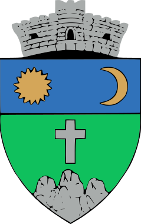

<!doctype html>
<html lang="en">
    <head>
        <meta charset="utf-8">
        <meta http-equiv="X-UA-Compatible" content="IE=edge">
        <meta name="viewport" content="initial-scale=1,user-scalable=no,maximum-scale=1,width=device-width">
        <meta name="mobile-web-app-capable" content="yes">
        <meta name="apple-mobile-web-app-capable" content="yes">
        <link rel="stylesheet" href="css/leaflet.css">
        <link rel="stylesheet" href="css/L.Control.Layers.Tree.css">
        <link rel="stylesheet" href="css/qgis2web.css">
        <link rel="stylesheet" href="css/fontawesome-all.min.css">
        <link rel="stylesheet" href="css/leaflet-control-geocoder.Geocoder.css">
        <link rel="stylesheet" href="css/leaflet-measure.css">
		<link rel="stylesheet" href="https://code.jquery.com/ui/1.12.1/themes/smoothness/jquery-ui.css">
		<link rel="stylesheet" href="css/leaflet-geoman.css">
        <style>
        html, body, #map {
            width: 100%;
            height: 100%;
            padding: 0;
            margin: 0;
        }
		
		.language-widget {
    		position: absolute;
    		top: 10px;
    		right: 10px;
    		background: rgba(248,248,248,255);
    		border: 1px solid #ccc;
    		border-radius: 3px;
    		box-shadow: 0 2px 10px rgba(0,0,0,0.1);
			display: flex;
			align-items: center;
    		padding: 5px;
    		z-index: 1000;
		}

		.language-icon {
    		width: 30px;
    		height: 20px;
    		cursor: pointer;
    		margin: 0 3px;
            transition: all 0.1s ease;
		}

		.language-icon.selected {
    		box-shadow: inset 0 0 10px rgba(255, 255, 255, 0.5);
            transform: scale(1.1);
		}

		.language-icon.unselected {
    		opacity: 0.8;
			transform: scale(0.9);
    		filter: brightness(0.9);
		}
		
        .language-icon.unselected:hover {
            transform: scale(1.0);
            opacity: 0.9;
			filter: brightness(1.0);
		}
		
		.leaflet-top.leaflet-right .leaflet-control-layers {
            margin-top: 50px;
            margin-right: 30px;	
        }
		
		#color-palette {
    		display: flex;
    		flex-direction: column;
    		position: absolute;
    		top: 50px; 
    		right: 10px; 
    		z-index: 1000;
		}

		#color-palette a {
    		width: 20px;
    		height: 20px;
    		margin: 2px;
    		border: 1px solid #ccc;
		}

		#color-palette a:hover {
    		border-color: #000;
		}

        </style>
        <title>RLU - Sândominic</title>
    </head>
    <body>
        <div id="map" style="z-index:1;">
        </div>
		<div class="language-widget">
            
            
        </div>
		<div id="color-palette" class="leaflet-bar">
    		<a href="#" data-color="red" style="background-color: red;"></a>
    		<a href="#" data-color="orange" style="background-color: orange;"></a>
    		<a href="#" data-color="yellow" style="background-color: yellow;"></a>
    		<a href="#" data-color="green" style="background-color: green;"></a>
    		<a href="#" data-color="blue" style="background-color: blue;"></a>
    		<a href="#" data-color="purple" style="background-color: purple;"></a>
		</div>
        <script src="js/qgis2web_expressions.js"></script>
        <script src="js/leaflet.js"></script>
        <script src="js/L.Control.Layers.Tree.min.js"></script>
        <script src="js/leaflet.rotatedMarker.js"></script>
        <script src="js/leaflet.pattern.js"></script>
        <script src="js/leaflet-hash.js"></script>
        <script src="js/Autolinker.min.js"></script>
        <script src="js/rbush.min.js"></script>
        <script src="js/labelgun.min.js"></script>
        <script src="js/labels.js"></script>
        <script src="js/leaflet-control-geocoder.Geocoder.js"></script>
        <script src="js/leaflet-measure.js"></script>
        <script src="data/Limitaadministrativ_2.js"></script>
        <script src="data/RegulamentLocaldeUrbanism_3.js"></script>
		<script src="dist/leaflet.browser.print.min.js"></script>
		<script src="https://code.jquery.com/jquery-3.6.0.min.js"></script>
		<script src="https://code.jquery.com/ui/1.12.1/jquery-ui.min.js"></script>
		<script src="js/leaflet-geoman.js"></script>
		<script>
        var highlightLayer;
		var currentOpacity = 1;  // Variable to keep track of the current opacity
		
        function highlightFeature(e) {
            highlightLayer = e.target;

            if (e.target.feature.geometry.type === 'LineString' || e.target.feature.geometry.type === 'MultiLineString') {
              highlightLayer.setStyle({
                color: 'rgba(0,255,242,' + currentOpacity + ')',
              });
            } else {
              highlightLayer.setStyle({
                fillColor: 'rgba(0,255,242,' + currentOpacity + ')',
                fillOpacity: currentOpacity,  // Use the current opacity for highlighting
				color: getBorderColorByType(e.target.feature.properties['Tip_ZF']),
				weight: 1,
				opacity: currentOpacity
              });
            }
        }
		function resetHighlight(e) {
            var layer = e.target;
            layer.setStyle(style_RegulamentLocaldeUrbanism_3_0(layer.feature));
        }
        var map = L.map('map', {
            zoomControl:false, maxZoom:23, minZoom:11
        }).setView([46.64567650140386, 25.822550882041516], 12);

        var hash = new L.Hash(map);
        map.attributionControl.setPrefix('<a href="https://leafletjs.com" target="_blank">Leaflet</a>');
        var autolinker = new Autolinker({truncate: {length: 30, location: 'smart'}});
		
		setTimeout(function() {
    		map.invalidateSize(); 
		}, 500);
		
        // remove popup's row if "visible-with-data"
        function removeEmptyRowsFromPopupContent(content, feature) {
         var tempDiv = document.createElement('div');
         tempDiv.innerHTML = content;
         var rows = tempDiv.querySelectorAll('tr');
         for (var i = 0; i < rows.length; i++) {
             var td = rows[i].querySelector('td.visible-with-data');
             var key = td ? td.id : '';
             if (td && td.classList.contains('visible-with-data') && feature.properties[key] == null) {
                 rows[i].parentNode.removeChild(rows[i]);
             }
         }
         return tempDiv.innerHTML;
        }
		
        // add class to format popup if it contains media
		function addClassToPopupIfMedia(content, popup) {
			var tempDiv = document.createElement('div');
			tempDiv.innerHTML = content;
			if (tempDiv.querySelector('td img')) {
				popup._contentNode.classList.add('media');
			} else {
				popup._contentNode.classList.remove('media');
			}
		}
        var title = new L.Control({'position':'topleft'});
        title.onAdd = function (map) {
            this._div = L.DomUtil.create('div', 'info');
            this.update('hu');
            return this._div;
        };
        title.update = function (lang) {
		    var text = lang === 'hu' ? 'Helyi Területrendezési Szabályozások<br>Csíkszentdomokos' : 'Regulament Local de Urbanism<br>Sândominic';
            this._div.innerHTML = `
                <div style="display: flex; align-items: center;">
                    <a href="https://domokos.ro/index.php/ro/" target="_blank">
                        
                    </a>
                    <h2 style="color: black; line-height: 1.3; margin: 0; font-family: Calibri, sans-serif; font-size: 24px;">
                        ${text}
                    </h2>
                </div>`;
        };
        title.addTo(map);
        var zoomControl = L.control.zoom({
            position: 'topleft'
        }).addTo(map);
		
        document.getElementById('romanian-flag').addEventListener('click', function() {
            title.update('ro');
        });

        document.getElementById('hungarian-flag').addEventListener('click', function() {
            title.update('hu');
        });
		
		map.pm.addControls({
            position: 'topleft',
            drawCircleMarker: false,
			drawRectangle: false,
			rotateMode: false,
        });
		
		// Change leaflet-geoman language
        function changeLanguage(lang) {
            map.pm.setLang(lang);
			L.PM.activeLang = lang;
        }
		
		changeLanguage('hu');

        // Event listeners for language switching
        document.getElementById('romanian-flag').addEventListener('click', function () {
            title.update('ro');
            changeLanguage('ro');
			setSelectedFlag('romanian-flag');
        });

        document.getElementById('hungarian-flag').addEventListener('click', function () {
            title.update('hu');
            changeLanguage('hu');
			setSelectedFlag('hungarian-flag');
        });
		
        function setSelectedFlag(selectedId) {
            var romanianFlag = document.getElementById('romanian-flag');
            var hungarianFlag = document.getElementById('hungarian-flag');
            if (selectedId === 'romanian-flag') {
                romanianFlag.classList.add('selected');
                romanianFlag.classList.remove('unselected');
                hungarianFlag.classList.remove('selected');
                hungarianFlag.classList.add('unselected');
            } else {
                romanianFlag.classList.remove('selected');
                romanianFlag.classList.add('unselected');
                hungarianFlag.classList.add('selected');
                hungarianFlag.classList.remove('unselected');
            }
        }
		
		setSelectedFlag('hungarian-flag');
		
		document.getElementById('color-palette').addEventListener('click', function(e) {
    		if (e.target.tagName === 'A') {
        		L.PM._selectedColor = e.target.getAttribute('data-color');
        		// Highlight selected color
        		[...document.querySelectorAll('#color-palette a')].forEach(el => el.style.borderColor = '#ccc');
        		e.target.style.borderColor = '#000';
    		}
		});
		
		var measureControl = new L.Control.Measure({
    		position: 'topleft',
    		primaryLengthUnit: 'meters',
    		secondaryLengthUnit: 'kilometers',
    		primaryAreaUnit: 'sqmeters',
    		secondaryAreaUnit: 'hectares',
 
		});
        map.addControl(measureControl);
		
        document.getElementsByClassName('leaflet-control-measure-toggle')[0].innerHTML = '';
        document.getElementsByClassName('leaflet-control-measure-toggle')[0].className += ' fas fa-ruler';
        var bounds_group = new L.featureGroup([]);
		
		L.control.browserPrint({
           title: 'Print',
           documentTitle: 'Regulament Local de Urbanism Sândominic',
           printModes: ["Portrait", "Landscape", "Auto", "Custom"],
           printModesNames: {
               Portrait: 'Portrait',
               Landscape: 'Landscape',
               Auto: 'Auto',
               Custom: 'Custom'
           },
           closePopupsOnPrint: false
       }).addTo(map);
		
		function setBounds() {
            map.setMaxBounds(map.getBounds());
        }
		
		map.createPane('pane_OpenStreetMap_1');
        map.getPane('pane_OpenStreetMap_1').style.zIndex = 401;
        var layer_OpenStreetMap_1 = L.tileLayer('http://tile.openstreetmap.org/{z}/{x}/{y}.png', {
            pane: 'pane_OpenStreetMap_1',
            opacity: 1.0,
            attribution: '<a href="https://www.openstreetmap.org/copyright" target="_blank">© OpenStreetMap contributors</a>',
            minZoom: 11,
            maxZoom: 23,
            minNativeZoom: 0,
            maxNativeZoom: 19
        });
        map.addLayer(layer_OpenStreetMap_1);
        map.createPane('pane_GoogleSatelliteHybrid_0');
        map.getPane('pane_GoogleSatelliteHybrid_0').style.zIndex = 400;
        var layer_GoogleSatelliteHybrid_0 = L.tileLayer('https://mt1.google.com/vt/lyrs=y&x={x}&y={y}&z={z}', {
            pane: 'pane_GoogleSatelliteHybrid_0',
            opacity: 1.0,
            attribution: '<a href="https://www.google.com/maps" target="_blank">© Google Maps </a>',
            minZoom: 11,
            maxZoom: 23,
            minNativeZoom: 0,
            maxNativeZoom: 18
        });
        function pop_Limitaadministrativ_2(feature, layer) {
            layer.on({
                mouseout: function(e) {
                    for (var i in e.target._eventParents) {
                        if (typeof e.target._eventParents[i].resetStyle === 'function') {
                            e.target._eventParents[i].resetStyle(e.target);
                        }
                    }
                },
                mouseover: highlightFeature,
            });
            var popupContent = '<table>\
                    <tr>\
                        <td colspan="2">' + (feature.properties['natcode'] !== null ? autolinker.link(feature.properties['natcode'].toLocaleString()) : '') + '</td>\
                    </tr>\
                    <tr>\
                        <td colspan="2">' + (feature.properties['name'] !== null ? autolinker.link(feature.properties['name'].toLocaleString()) : '') + '</td>\
                    </tr>\
                    <tr>\
                        <td colspan="2">' + (feature.properties['natLevName'] !== null ? autolinker.link(feature.properties['natLevName'].toLocaleString()) : '') + '</td>\
                    </tr>\
                    <tr>\
                        <td colspan="2">' + (feature.properties['countyId'] !== null ? autolinker.link(feature.properties['countyId'].toLocaleString()) : '') + '</td>\
                    </tr>\
                    <tr>\
                        <td colspan="2">' + (feature.properties['countyCode'] !== null ? autolinker.link(feature.properties['countyCode'].toLocaleString()) : '') + '</td>\
                    </tr>\
                    <tr>\
                        <td colspan="2">' + (feature.properties['county'] !== null ? autolinker.link(feature.properties['county'].toLocaleString()) : '') + '</td>\
                    </tr>\
                    <tr>\
                        <td colspan="2">' + (feature.properties['countyMn'] !== null ? autolinker.link(feature.properties['countyMn'].toLocaleString()) : '') + '</td>\
                    </tr>\
                    <tr>\
                        <td colspan="2">' + (feature.properties['regionId'] !== null ? autolinker.link(feature.properties['regionId'].toLocaleString()) : '') + '</td>\
                    </tr>\
                    <tr>\
                        <td colspan="2">' + (feature.properties['regionCode'] !== null ? autolinker.link(feature.properties['regionCode'].toLocaleString()) : '') + '</td>\
                    </tr>\
                    <tr>\
                        <td colspan="2">' + (feature.properties['region'] !== null ? autolinker.link(feature.properties['region'].toLocaleString()) : '') + '</td>\
                    </tr>\
                    <tr>\
                        <td colspan="2">' + (feature.properties['pop2011'] !== null ? autolinker.link(feature.properties['pop2011'].toLocaleString()) : '') + '</td>\
                    </tr>\
                    <tr>\
                        <td colspan="2">' + (feature.properties['pop2012'] !== null ? autolinker.link(feature.properties['pop2012'].toLocaleString()) : '') + '</td>\
                    </tr>\
                    <tr>\
                        <td colspan="2">' + (feature.properties['pop2013'] !== null ? autolinker.link(feature.properties['pop2013'].toLocaleString()) : '') + '</td>\
                    </tr>\
                    <tr>\
                        <td colspan="2">' + (feature.properties['pop2014'] !== null ? autolinker.link(feature.properties['pop2014'].toLocaleString()) : '') + '</td>\
                    </tr>\
                    <tr>\
                        <td colspan="2">' + (feature.properties['pop2015'] !== null ? autolinker.link(feature.properties['pop2015'].toLocaleString()) : '') + '</td>\
                    </tr>\
                    <tr>\
                        <td colspan="2">' + (feature.properties['sortCode'] !== null ? autolinker.link(feature.properties['sortCode'].toLocaleString()) : '') + '</td>\
                    </tr>\
                    <tr>\
                        <td colspan="2">' + (feature.properties['version'] !== null ? autolinker.link(feature.properties['version'].toLocaleString()) : '') + '</td>\
                    </tr>\
                </table>';
            var content = removeEmptyRowsFromPopupContent(popupContent, feature);
			layer.on('popupopen', function(e) {
				addClassToPopupIfMedia(content, e.popup);
			});
			layer.bindPopup(content, { maxHeight: 400 });
        }

        function style_Limitaadministrativ_2_0() {
            return {
                pane: 'pane_Limitaadministrativ_2',
                opacity: 1,
                color: 'rgba(35,35,35,1.0)',
                dashArray: '15.0,3.0',
                lineCap: 'butt',
                lineJoin: 'miter',
                weight: 3.0, 
                fill: true,
                fillOpacity: 1,
                fillColor: 'rgba(125,139,143,0.0)',
                interactive: false,
            }
        }
        map.createPane('pane_Limitaadministrativ_2');
        map.getPane('pane_Limitaadministrativ_2').style.zIndex = 402;
        map.getPane('pane_Limitaadministrativ_2').style['mix-blend-mode'] = 'normal';
        var layer_Limitaadministrativ_2 = new L.geoJson(json_Limitaadministrativ_2, {
            attribution: '',
            interactive: false,
			pmIgnore: true,
            dataVar: 'json_Limitaadministrativ_2',
            layerName: 'layer_Limitaadministrativ_2',
            pane: 'pane_Limitaadministrativ_2',
            onEachFeature: pop_Limitaadministrativ_2,
            style: style_Limitaadministrativ_2_0,
        });
        bounds_group.addLayer(layer_Limitaadministrativ_2);
        map.addLayer(layer_Limitaadministrativ_2);
        	// Function to escape HTML entities to prevent issues
        function escapeHtml(text) {
            var map = {
                '&': '&amp;',
                '<': '&lt;',
                '>': '&gt;',
                '"': '&quot;',
                "'": '&#039;'
            };
            return text.replace(/[&<>"']/g, function(m) { return map[m]; });
        }
		// Process text to ensure paragraphs are preserved
        function formatText(text) {
            if (text) {
				text = escapeHtml(text);
                text = text.replace(/\r?\n\r?\n/g, '</p><p>').replace(/\r?\n/g, '<br>');
                return '<p>' + text + '</p>';
            }
            return text;
        }
		function pop_RegulamentLocaldeUrbanism_3(feature, layer) {
            layer.on({
                mouseout: function(e) {
                    for (var i in e.target._eventParents) {
                        if (typeof e.target._eventParents[i].resetStyle === 'function') {
                            e.target._eventParents[i].resetStyle(e.target);
                        }
                    }
                },
                mouseover: highlightFeature,
            });
            var popupContent = '<table>\
                    <tr>\
                        <td colspan="2" style="background-color: grey; color: white; font-weight: bold; height: 25px;">' + (feature.properties['Tip_ZF'] !== null ? autolinker.link(feature.properties['Tip_ZF'].toLocaleString()) : '') + '<br></td>\
                    </tr>\
					<tr>\
                        <td colspan="2" style="height: 5px;"></td>\
                    </tr>\
                    <tr>\
                        <th scope="row" style="text-align: left; width: 250px;">Arie Zonă Funcțională</th>\
                        <td style="text-align: left;">' + (feature.properties['Arie_ZF'] !== null ? autolinker.link(feature.properties['Arie_ZF'].toLocaleString() + ' m<sup>2</sup>') : '') + '</td>\
                    </tr>\
					<tr>\
                        <td colspan="2" style="height: 5px;"></td>\
                    </tr>\
                    <tr>\
                        <td colspan="2"><strong>Regulament Local de Urbanism</strong><br />' + (feature.properties['RO_RLU'] !== null ? formatText(feature.properties['RO_RLU']) : '') + '</td>\
                    </tr>\
                    <tr>\
                        <td colspan="2"><strong>Helyi Területrendezési Szabályozások</strong><br />' + (feature.properties['HU_RLU'] !== null ? formatText(feature.properties['HU_RLU']) : '') + '</td>\
                    </tr>\
                </table>';
            var content = removeEmptyRowsFromPopupContent(popupContent, feature);
			layer.on('popupopen', function(e) {
				addClassToPopupIfMedia(content, e.popup);
			});
			layer.bindPopup(content, { maxHeight: 400, maxWidth: 600 });
        }
        map.createPane('pane_RegulamentLocaldeUrbanism_3');
        map.getPane('pane_RegulamentLocaldeUrbanism_3').style.zIndex = 403;
        map.getPane('pane_RegulamentLocaldeUrbanism_3').style['mix-blend-mode'] = 'normal';
		function updateOpacity(value) {
		    currentOpacity = value;  // Update the current opacity
            layer_RegulamentLocaldeUrbanism_3.setStyle(function(feature){
                return {
				    pane: 'pane_RegulamentLocaldeUrbanism_3',
					color: getBorderColorByType(feature.properties['Tip_ZF']),
					weight: 1, //Border width
					opacity: currentOpacity,
					dashArray: '',
					lineCap: 'butt',
					lineJoin: 'miter',
					fill: true,
					fillOpacity: currentOpacity,
					fillColor: getColorByType(feature.properties['Tip_ZF']),
					interactive: true
				};
			});
			//If a feature is currently highlighted, update its style as well
			if (highlightLayer) {
			    highlightLayer.setStyle({
				    fillOpacity: currentOpacity,
					color: getBorderColorByType(highlightLayer.feature.properties['Tip_ZF']),
					weight: 1,
					opacity: currentOpacity
				});
			}
		}
		// Function to determine color based on property value
        function getColorByType(type) {
            switch (String(type)) {
                case 'Echipare tehnico-edilitară':
                    return 'rgba(162,85,72,1.0)';
                case 'Zonă centrală':
                    return 'rgba(255,52,1,1.0)';
                case 'Zonă comerţ şi servicii':
                case 'Zonă comerț și servicii':
                    return 'rgba(121,149,235,1.0)';
                case 'Zonă gospodării comunale':
                    return 'rgba(245,153,40,1.0)';
                case 'Zonă instituții publice':
                    return 'rgba(245,128,214,1.0)';
                case 'Zonă locuințe și funcțiuni complementare':
                    return 'rgba(235,228,35,1.0)';
                case 'Zonă spații verzi, sport și agrement':
                    return 'rgba(51,204,28,1.0)';
                case 'Zonă unități industriale și de depozitare':
                    return 'rgba(175,20,210,1.0)';
                default:
                    return 'rgba(16,74,233,1.0)'; // Default color if none match
            }
        }
		function getBorderColorByType(type) {
		    switch(String(type)) {
			    default:
				    return 'rgba(0,0,0,' + currentOpacity + ')';
			}
		}

		// Style function for the layer
        function style_RegulamentLocaldeUrbanism_3_0(feature) {
            return {
                pane: 'pane_RegulamentLocaldeUrbanism_3',
                color: getBorderColorByType(feature.properties['Tip_ZF']), //Border color
				weight: 1, //Border width
				opacity: currentOpacity,
				dashArray: '',
				lineCap: 'butt',
				lineJoin: 'miter',
				fill: true,
                fillOpacity: currentOpacity,
				fillColor: getColorByType(feature.properties['Tip_ZF']),
                interactive: true
            };
        }
		// Add the Regulament Local de Urbanism layer
        var layer_RegulamentLocaldeUrbanism_3 = new L.geoJson(json_RegulamentLocaldeUrbanism_3, {
            attribution: '',
            interactive: true,
			pmIgnore: true,
            dataVar: 'json_RegulamentLocaldeUrbanism_3',
            layerName: 'layer_RegulamentLocaldeUrbanism_3',
            pane: 'pane_RegulamentLocaldeUrbanism_3',
            onEachFeature: pop_RegulamentLocaldeUrbanism_3,
            style: style_RegulamentLocaldeUrbanism_3_0,
        });
        map.addLayer(layer_RegulamentLocaldeUrbanism_3);

        // Wait for the DOM to load before adding the slider
        document.addEventListener('DOMContentLoaded', function() {
            // Find the container for the overlays
            var overlaysContainer = document.querySelector('.leaflet-control-layers-overlays');
            
            if (overlaysContainer) {
                // Create the slider container
                var sliderContainer = document.createElement('div');
                sliderContainer.style.marginTop = '10px';

                // Create the label
                var sliderLabel = document.createElement('label');
                sliderLabel.htmlFor = 'opacitySlider';
                sliderLabel.innerText = 'Transparență RLU';
				sliderLabel.style.fontWeight = 'bold';

                // Create the slider input
                var sliderInput = document.createElement('input');
                sliderInput.type = 'range';
                sliderInput.id = 'opacitySlider';
                sliderInput.min = '0';
                sliderInput.max = '1';
                sliderInput.step = '0.1';
                sliderInput.value = '1';
                sliderInput.onchange = function() {
                    updateOpacity(this.value);
                };

                // Append the label and slider to the slider container
                sliderContainer.appendChild(sliderLabel);
                sliderContainer.appendChild(sliderInput);

                // Append the slider container to the overlays container
                overlaysContainer.appendChild(sliderContainer);
            }
        });
        
        var baseMaps = [
		    {label: "OpenStreetMap", layer: layer_OpenStreetMap_1},
            {label: "Google Satellite Hybrid", layer: layer_GoogleSatelliteHybrid_0},]
        var overlaysTree = [
		    {label: ' <strong>Limita administrativă</strong>', layer: layer_Limitaadministrativ_2},
            {label: '<strong>Regulament Local de Urbanism</strong><br /><table><tr><td style="text-align: center;"></td><td>Echipare tehnico-edilitară</td></tr><tr><td style="text-align: center;"></td><td>Zonă centrală</td></tr><tr><td style="text-align: center;"></td><td>Zonă comerţ şi servicii</td></tr><tr><td style="text-align: center;"></td><td>Zonă comerț și servicii</td></tr><tr><td style="text-align: center;"></td><td>Zonă gospodării comunale</td></tr><tr><td style="text-align: center;"></td><td>Zonă instituții publice</td></tr><tr><td style="text-align: center;"></td><td>Zonă locuințe și funcțiuni complementare</td></tr><tr><td style="text-align: center;"></td><td>Zonă spații verzi, sport și agrement</td></tr><tr><td style="text-align: center;"></td><td>Zonă unități industriale și de depozitare</td></tr><tr><td style="text-align: center;"></td><td></td></tr></table>', layer: layer_RegulamentLocaldeUrbanism_3},
            ]
        var lay = L.control.layers.tree(baseMaps, overlaysTree,{
            //namedToggle: true,
            //selectorBack: false,
            //closedSymbol: '&#8862; &#x1f5c0;',
            //openedSymbol: '&#8863; &#x1f5c1;',
            //collapseAll: 'Collapse all',
            //expandAll: 'Expand all',
            collapsed: true,
			position: 'topright'
        });
        lay.addTo(map);
        setBounds();
		L.control.scale( { imperial: false, metric: true  } ).addTo(map);

        </script>
	<div id="logo">
        <a href="https://www.rendezesiterv.eu/" target="_blank">
		    
		</a>
    </div>
    </body>
</html>
